Presentation: A Stroop by Any Other Name..
Presented at GSURC 2014

My Role
I analyzed and presented a representation of the research done with the IDEA Lab at Georgia State's Undergraduate Research Conference in 2015.Background

Take your time, you may need more than you think though.
Take a look at this series of words for a second; You might have seen this before.
Now, go back through the list and say the color of each word without stopping. How'd you do? Ask a friend to try it.
This is a classic test is based on something called the Stroop Effect which has to do with how something interferes with your ability to do a particular task. It's been used in thousands of experiments on the competition for the control of attention. When response tendencies conflict (like how yellow was printed in green but the correct answer was indeed 'yellow'), participants must override the strong, habitual tendency to read the word and maintain instead the goal of naming the word’s color. Another similar task to the Stroop effect which we also looked at include the Eriksen Flanker Task which uses surrounding congruent stimuli to induce interference.
We already know a lot about this stuff, but what our lab wanted to look at was the question of magnitude. Was the effect stronger in a case where the correct answer 'red' was written in a similar hue like pink versus a diametrically opposite hue like green?
Methods and Results
We adminstered five computer based tasks to 155 undergraduates at Georgia State University, Four variants of the Stroop effect and one of the Flanker task. Across tasks, we analyzed both the differences between conditions (incongruous versus baseline) and also any trial-by-trial variations in degree of stimulus competition.
We found significant interference effects in the metrics for accuracy for all tasks, and in latency measures for four of the tasks. Something unique to the present investigation was that the magnitude of Stroop-like interference varied reliably as a function of stimulus competition for all tasks. Meaning incongruous trials were not all uniformly incongruous. These findings not only provide additional information about the competition between executive constraints, environmental constraints, and experiential constraints on the control of attention, but they may also yield insights on some of the psychometric challenges commonly associated with Stroop-like paradigms.